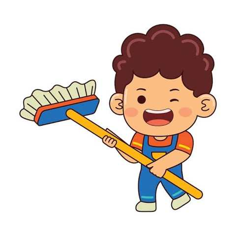

Nearby connectionsDiscover local skills
GOOD PEOPLE. RIGHT IN YOUR NEIGHBOURHOOD.
Local work.
Trusted hands.
Everyday help should be easy to find, fair to afford, and safe to arrange. Connect with nearby service professionals for home repairs, cleaning, cooking, and more.
✓
Local connections make a difference.
More convenience for customers. More opportunities for workers.
⌖
Help is closer than you thinkDiscover skills in your area
POPULAR LOCAL SERVICES
PlumbingLeaks, taps & repairs↗
Electrical workRepairs & installation↗
Home cleaningOne-time or scheduled↗
Cooking & daily helpSkills for everyday life↗
✓ Clear agreements. Local opportunity.
✳
Trust comes firstSafety-focused by design
Fair, clear pricingDiscuss before work begins
Trust & safetyEncourage verification and feedback
More opportunitiesHelp workers get noticed
EVERYDAY SERVICES, CLOSER TO HOME
Whatever the task,
there’s a local skill for it.
Find help for household jobs, repairs, and routine chores. Arrange a time and agree on the work clearly.
01 / REPAIRS
Plumbing
Leaks, taps, fittings, and common water-related repairs.
Find help →
02 / HOME
Electrical work
Household repairs and installation by skilled workers.
Find help →
03 / CLEANING
Home cleaning
One-time cleaning or scheduled help to keep spaces fresh.
Find help →04 / DAILY HELP
Cooking & more
Connect with local cooks and people with everyday skills.
Find help →✳ Booking requests are sent to the platform and remain pending until availability is confirmed.
A SIMPLE, FAIR PROCESS
From “I need help”
to “job done.”
A straightforward way for customers and workers to discuss a job, agree on a fair price, and choose a suitable time.
Create an account
Register as a customer or service professional.
Explore nearby workers
Search worker profiles by skill and local area.
Agree on a fair price
Discuss rates and expectations before work begins.
Request a booking
Submit a preferred date and time for confirmation.
🧰YOUR SKILLS HAVE VALUE
FOR LOCAL SERVICE PROFESSIONALS
Your skills deserve
more opportunities.
Work Satthi helps local workers reach nearby customers, share their rates, and build a reputation through reliable service.
- ✓ Create a worker profile
- ✓ Share your service, area, and rate
- ✓ Help customers discover your skills
OUR SOCIAL IMPACT
When local work grows,
communities grow with it.
Reliable help should be easier to find, and skilled workers should have more ways to find work than word of mouth alone. We want to bring these needs together in one accessible, hyperlocal platform.
“Technology works best when it connects people to opportunity—right where they live.
WORK SATTHI · SOCIAL IMPACT